The Architect’s Guide to the Galaxy
In 2017, BIG was commissioned to design a Martian prototype habitat in Dubai. The Architect's Guide to the Galaxy is a complementary project to this endeavor: the Mars Science City.
The goal of the book was to inspire people curious about space exploration. But instead of creating a classic scientific manual, we wanted to highlight the unique challenges and opportunities of designing architecture on other planets—while presenting it in a more accessible, user-friendly way.
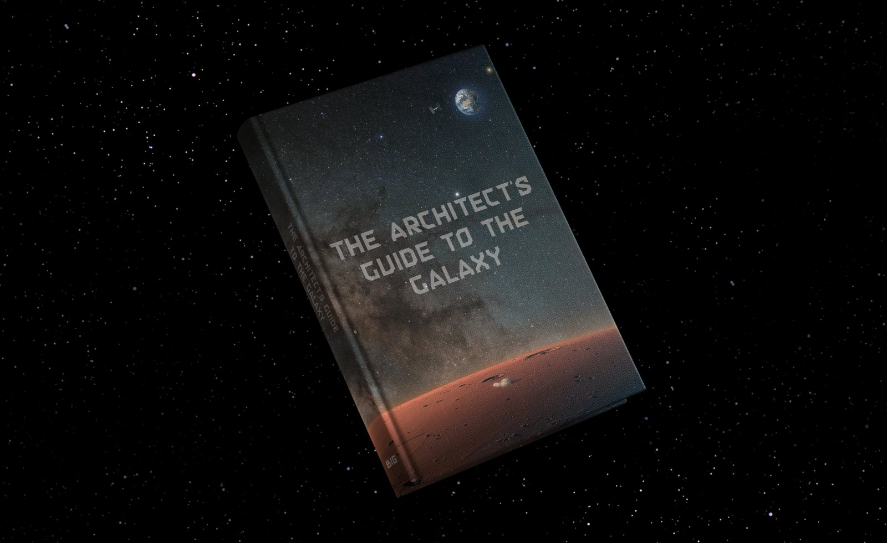
We started by conducting in-depth research on the many planets and moons in our solar system, examining their conditions in terms of temperature, radiation, atmosphere, gravity, and more. One of our team members, who previously worked at SpaceX, helped ensure the information was as accurate as possible. In the end, we identified eight potential candidates—planets and moons—where human life might be able to thrive.
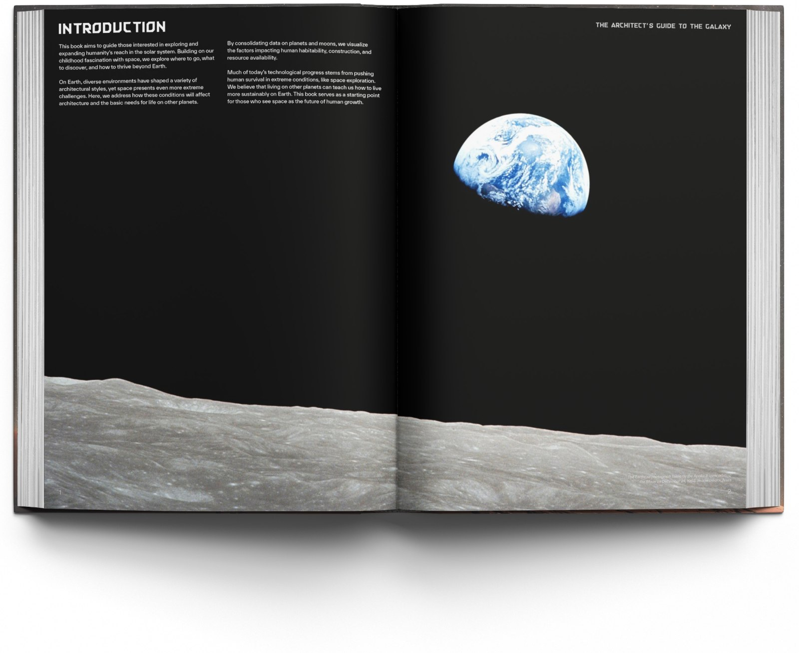
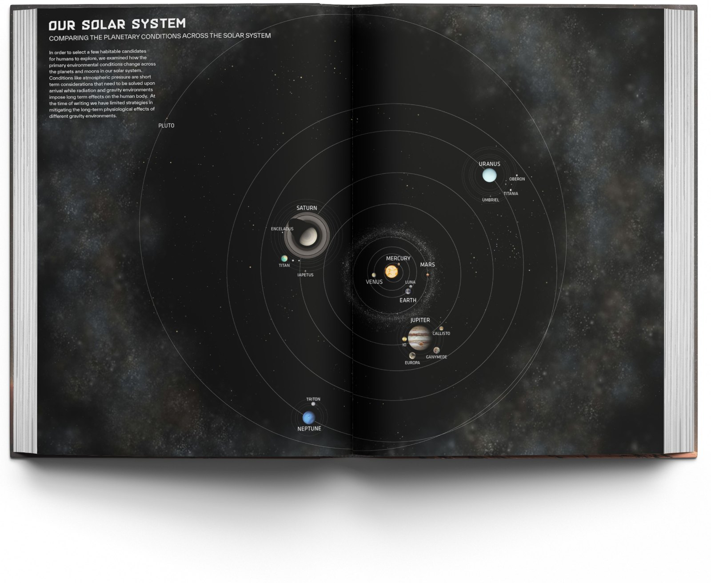
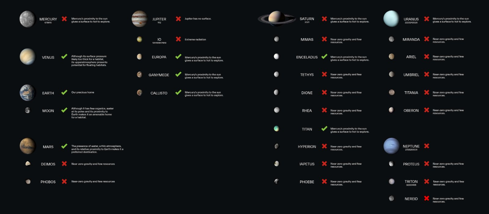
My task as the graphic designer for this project was to present the information in a way that was both digestible and aesthetically pleasing. We also faced the challenge of making the content user-friendly so that everyone could easily understand it.
The problem was that much of our information ended up looking quite similar and repetitive. That’s why I developed and proposed a new graphic style: little videogame-like “chunks” of planets. This approach allowed us to highlight the key characteristics of each planet or moon, while keeping the visuals playful and approachable.
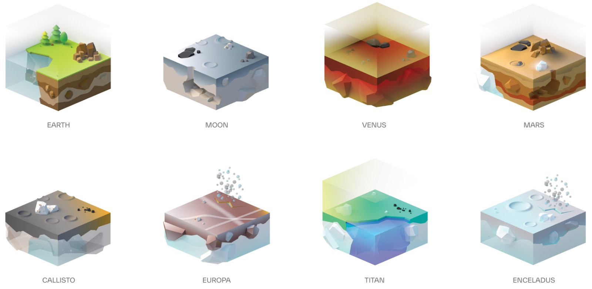
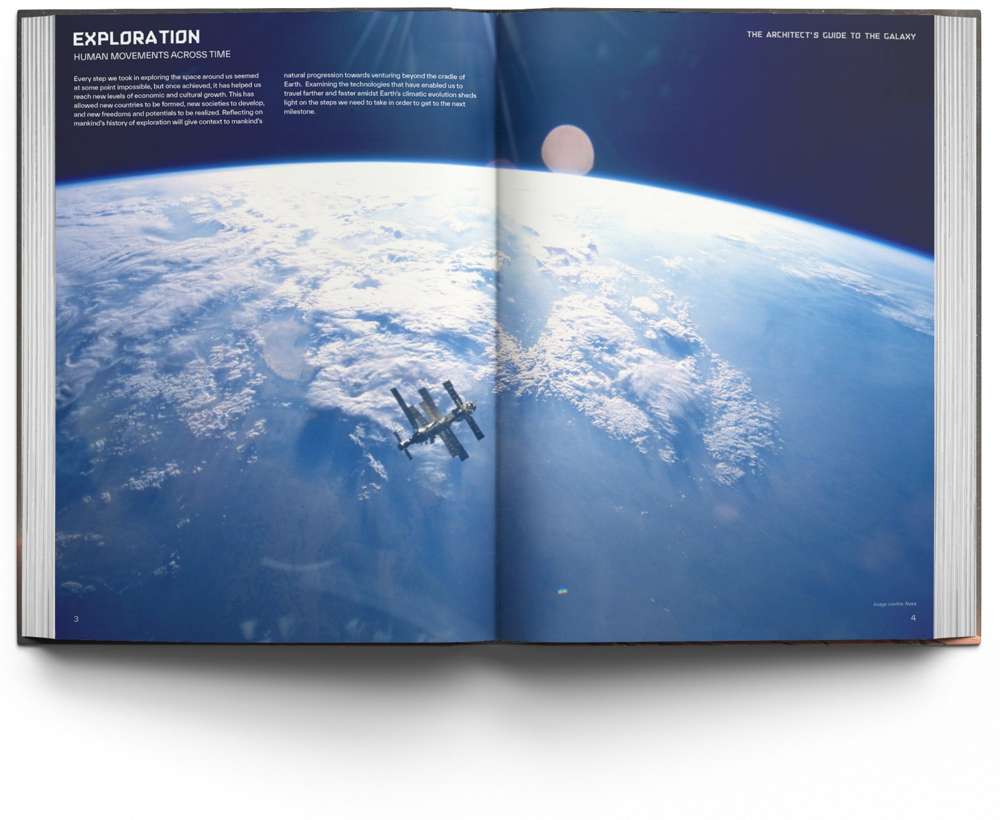
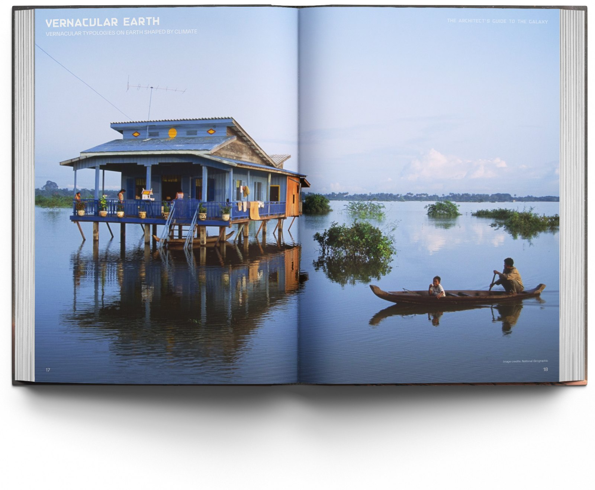
There was a chapter in the book where we analyzed the different climatic conditions that have led to diverse forms of vernacular architecture on Earth. We studied existing building techniques from around the world to draw inspiration for how we might construct settlements on other planets.
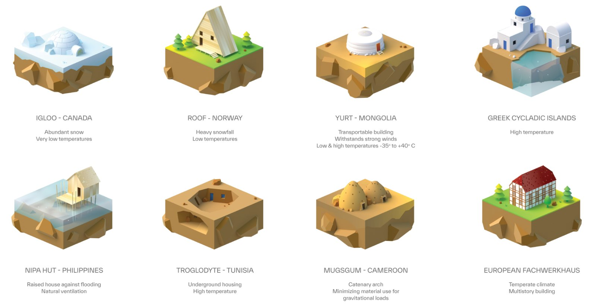
From there, we began to imagine how those building processes could unfold in extraterrestrial environments, considering the materials that might be available. This exploration led us to develop a diagram illustrating potential building techniques adapted for other planets.
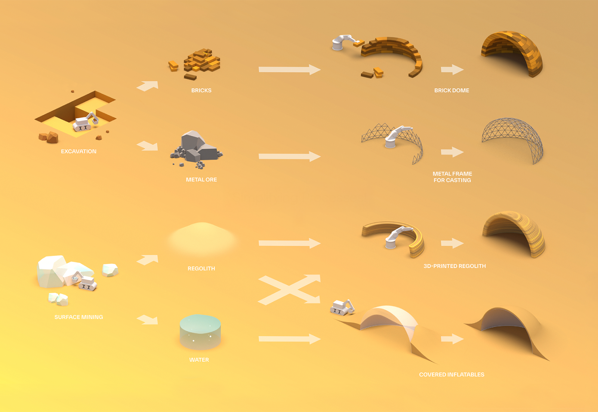
At the end of the book, we condensed all the information we gathered during the project, going planet by planet. It was incredibly satisfying to see the result—it provided an amazing overview of all the work we had done. You also notice a consistent graphic style that ties everything together, with all the information neatly broken down into individual chunks.
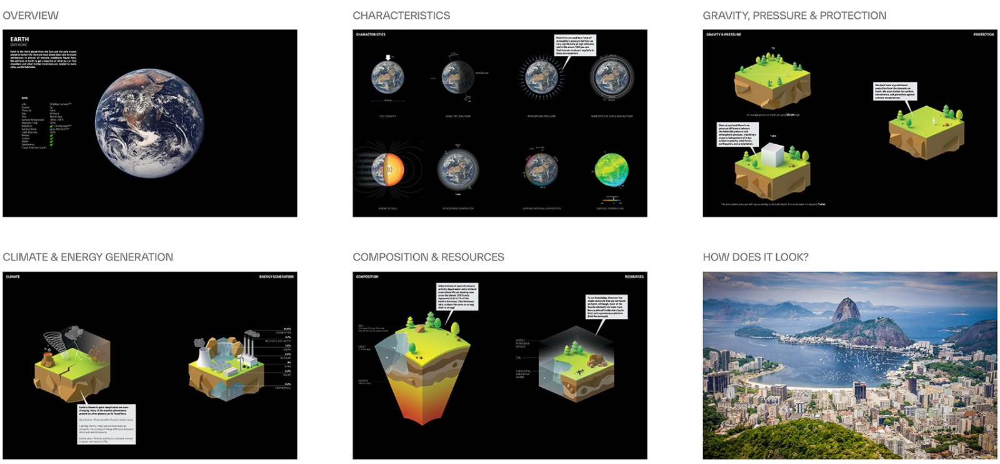
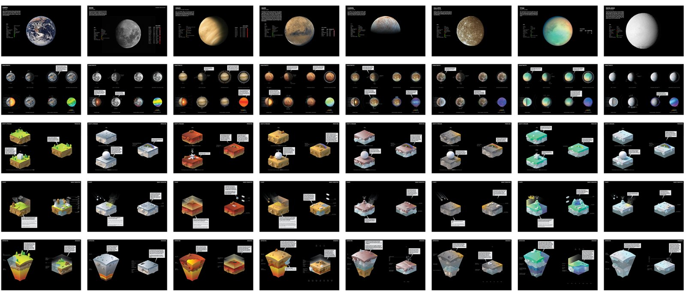
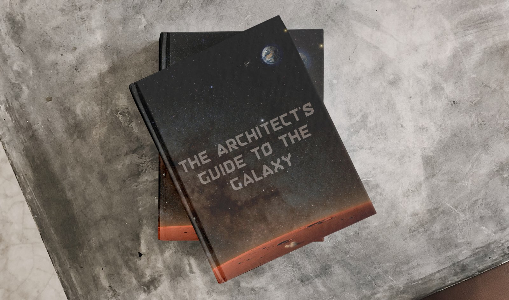